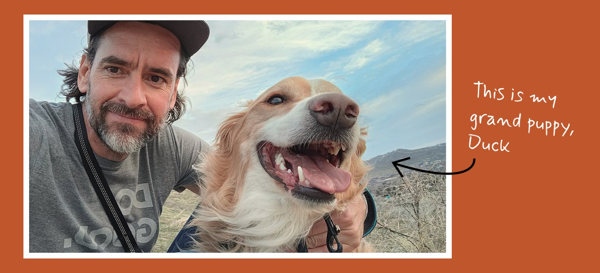
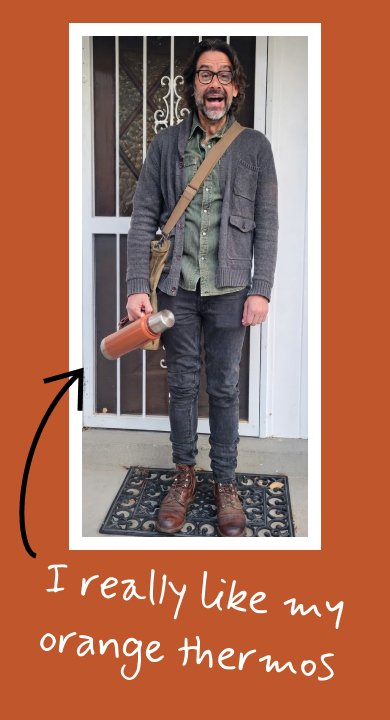
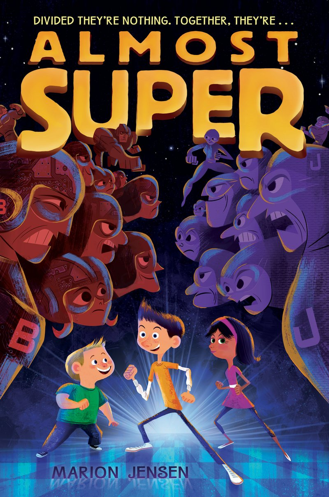
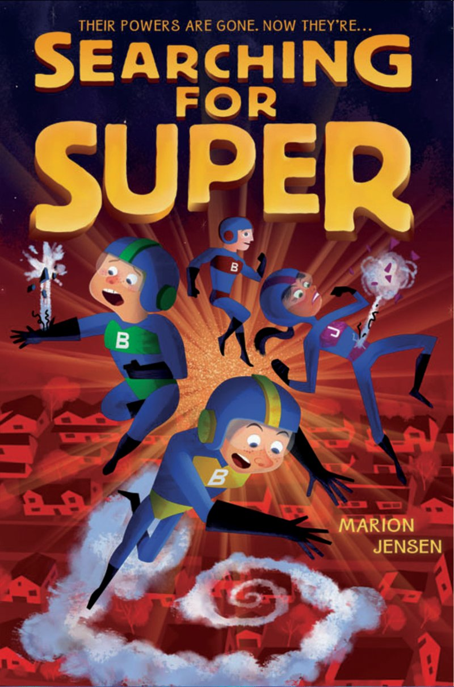

Free Author Videos for Schools
Reading Almost Super with your school? Hello, educators and librarians! If your school has chosen Almost Super for One School, One Book — or you're just reading it together as a class — I'd love to record a free video message for your students.
No fees, no forms, no booking agents. Email me with your school's name, where you're located, and when you're reading the book, and I'll take it from there.
“Not only through your writing but offering the personal video is truly a step beyond what we imagined.”— Elementary interventionist, IllinoisRequest a school video
Yes, really free. Hearing from schools is the best part of this whole author thing.

I write silly books with heart, I teach people how to learn, and I tinker with technology to make learning better.
By day, I'm an instructional designer helping people get smarter at their jobs. By night — okay, sometimes also by day — I'm a novelist and someone who believes that the best stories and the best classrooms have the same thing in common: they meet you where you are.
The best part of this job is hearing from schools: entire buildings of kids reading about questionable superpowers at the same time, families turning out for Family Reading Nights, librarians restocking the sequel. That beats a cape any day.

Almost Super
Two brothers expect to receive amazing superpowers on their birthday. Instead, one gets the ability to change his belly button from an innie to an outie. On command. The other? You'll have to read the book to find out. Naturally, they decide to become superheroes anyway — even if it means they have to work hard at it.
Almost Super has been chosen by schools across the country as part of the One School, One Book program, where entire schools — kindergarten through fifth grade — read the same book together as a community.

Searching for Super
The superheroes of Split Rock have lost their powers, and everyone is hunkering down — which is really just a fancy way of saying they're hiding. Rafter Bailey is back, and with his brother Benny, his cousin Thimon, and his best friend Juanita, he's going to figure out what makes a hero when the powers are gone.
Just finished Almost Super with your class? This is the book to hand the kids who want to know what happens next.
Every Bookshop.org order supports independent bookstores. Better yet — walk into your local bookshop and ask them to order a copy. They can get anything, and they're wonderful.
100,000+ copies sold
Thank you, readers. You're the real superheroes.
What Schools Are Saying
“The book was a big hit at our school and the kids have LOVED it!” — ELL director and teacher, Indiana
“We just ordered 10 copies of the sequel for our library. So many of our students want to keep reading after the program and book end.” — Elementary principal, Alaska
Get in Touch
Whether you're a school reading Almost Super, a teacher or librarian with a question, or just someone who wants to say hello — I'd love to hear from you.